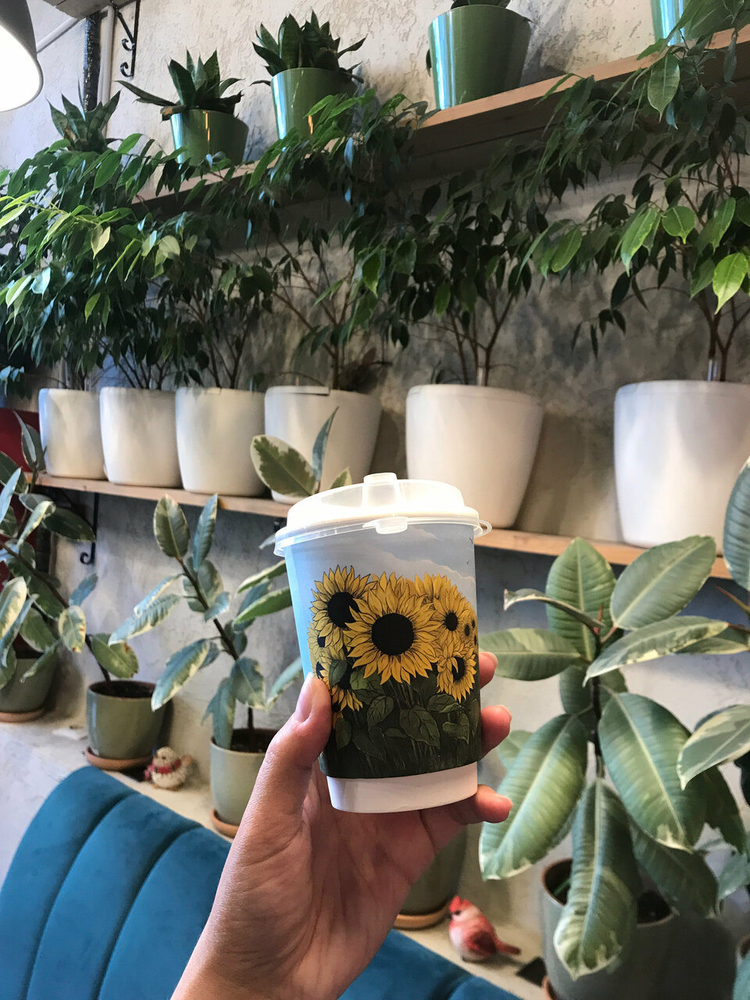
Растения настоящие
Не пластик «для интерьера». Фикусы, сансевиерии, мох и цветы, которые хочется унести домой — гости так и пишут.
чик
Зелёное место
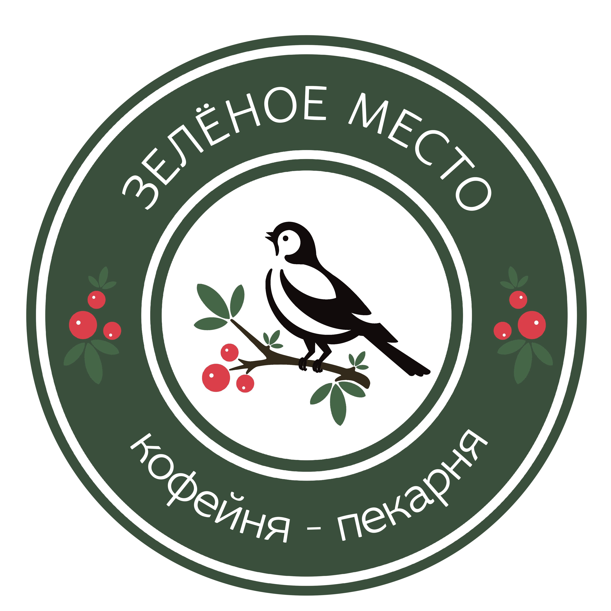
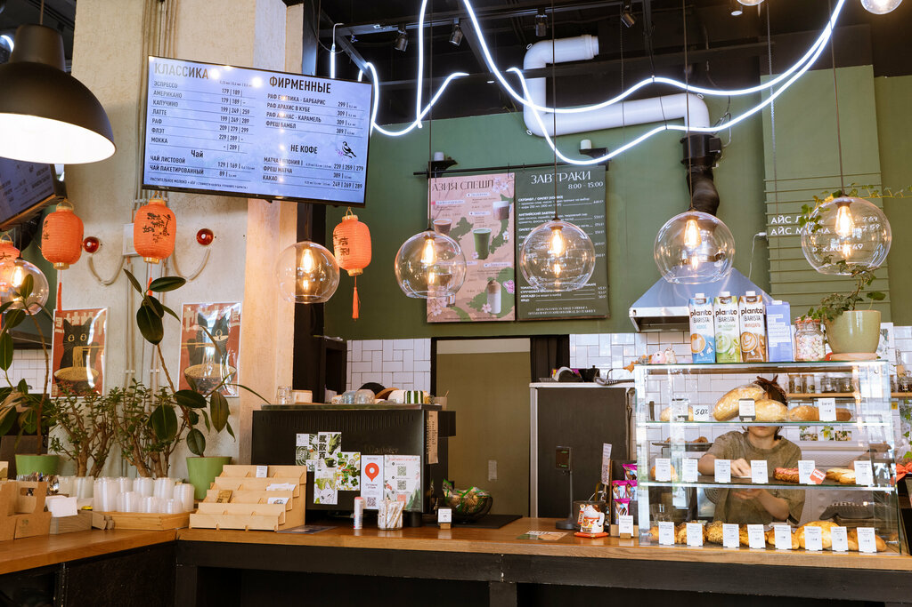
Плесецкая, 14 · Юнтолово
Кофейня-пекарня, где поют канарейки, растут живые растения и пекут круассаны на сливочном масле. Не сеть. Место с душой.
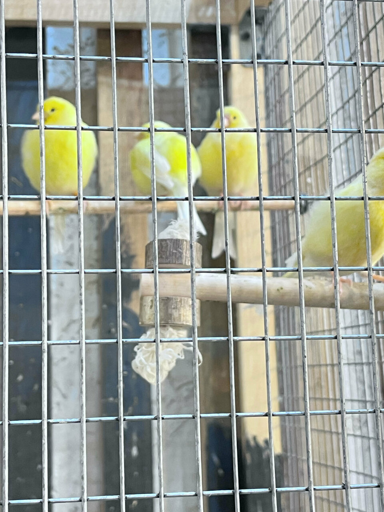
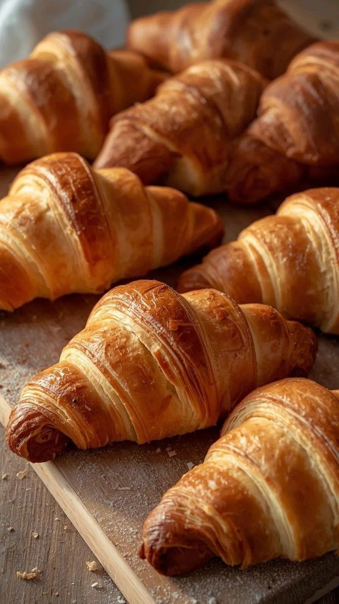
Не просто кофе
Когда-то нас знали как «Чик-Чирик» и «Птичку». С 2024-го мы — Зелёное место. Green Place. Тот же двор, те же руки, те же птицы. Только ещё зеленее.
Мы любим всё живое, настоящее и зелёное. Поэтому у нас только живые растения, птицы и живое общение.
из дневника кофейни, июнь 2024

Не пластик «для интерьера». Фикусы, сансевиерии, мох и цветы, которые хочется унести домой — гости так и пишут.
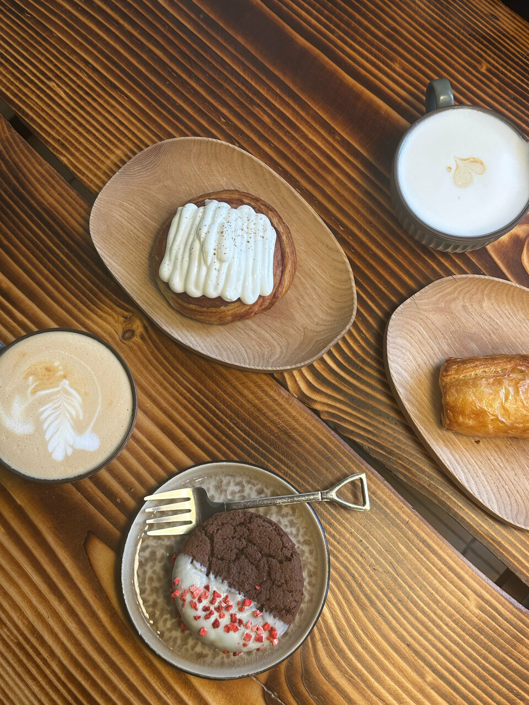
Круассаны на сливочном масле, улитки с корицей, хлеб, сосиски в тесте. Гости сравнивают с Парижем — и не ради комплимента.
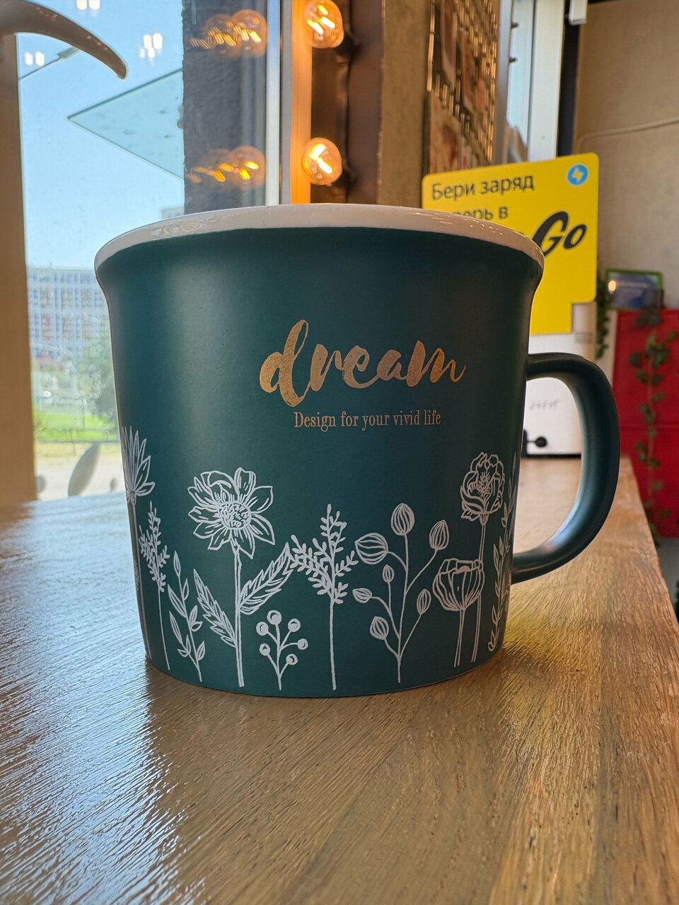
Мягкий, без горечи. Вишнёвый капучино, раф ежевика-барбарис, матча из Японии. Бариста знают постоянников по имени.
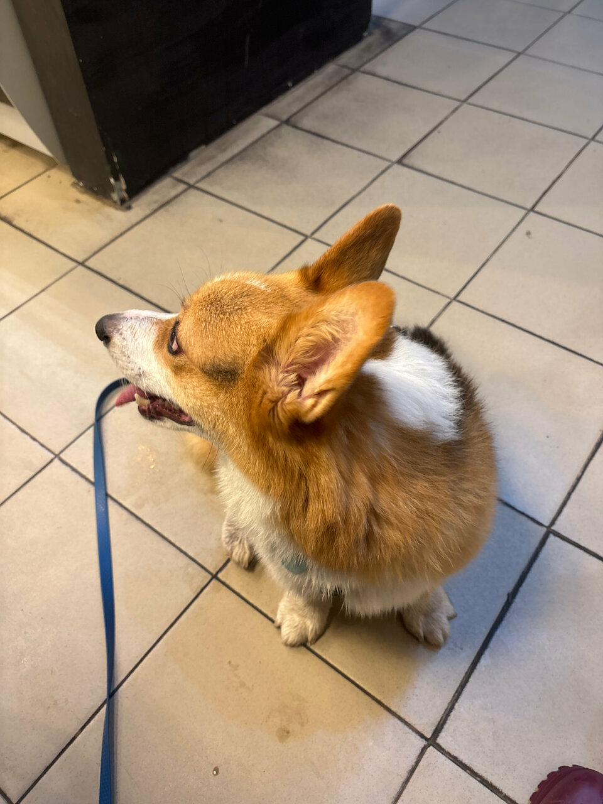
Dog-friendly каждый день до 15:00: −10% на весь ассортимент к кофе. Детский уголок, книги, бесплатная горячая вода.
чик-чирик
Не колонка с «звуками леса». Живые птицы в просторной клетке, за которыми ухаживают. Гости здороваются с ними, дети забегают «посмотреть на птичек», а взрослые остаются дольше, чем планировали.
Кари — местная знаменитость. Ей оставляют приветы в отзывах. Если придёте — поздоровайтесь. Она отвечает.
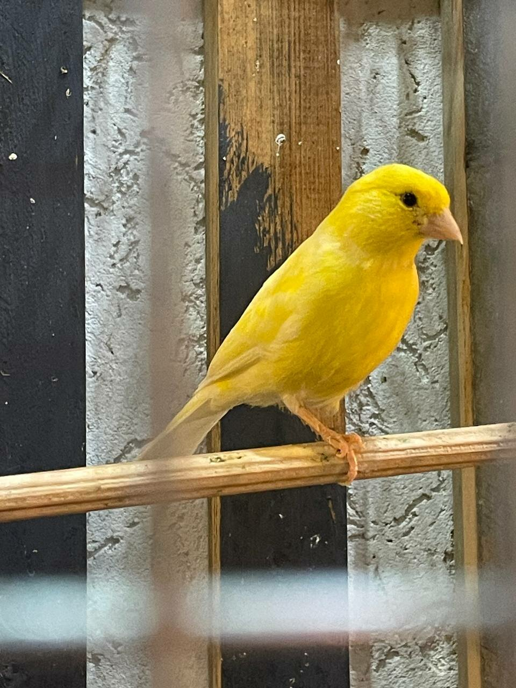
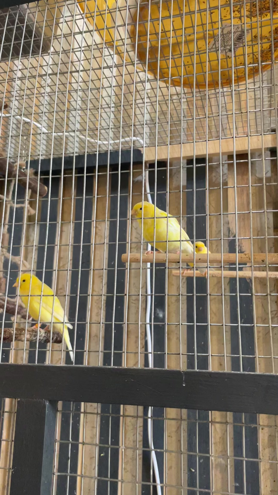
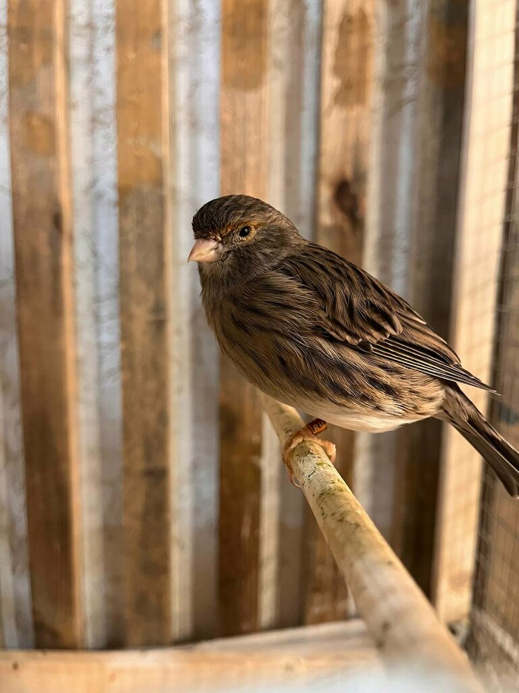
Добрый вечер
Завтраки до 15:00. После 21:00 — скидка на выпечку. Кари уже, возможно, дремлет.
«Ради местных круассанов иногда в принципе хочется по утрам жить. Ну и канарейки, которые поют просто как райские птички.»
Инкогнито · Яндекс Карты«Круассаны такие же вкусные, как и в Париже. Ещё прикольная музыка — не готовый плейлист для кафешек.»
Ekaterina · кофеман«Привет канарейке Кари, которая там живёт. Максимально душевное место. Девушки-сотрудницы просто ангелы.»
Анна Мироница«Мама приезжает в Зелёное место за кофе и круассаном даже из центра города.»
Елизавета Ческидова«Тыквенный суп заставил написать этот отзыв. Ивлев, Рамзи — кто бы ни был — не смогут сделать такой.»
Аннуш Гарлыев«Видно, что это место соткано из любви. Спасибо, родной Чик-Чирик.»
Павел Дмитрашинаприходите
Wi-Fi, можно с ноутбуком, можно с собакой, детский уголок, книги, велопарковка, зарядка, Яндекс Еда и самовывоз.